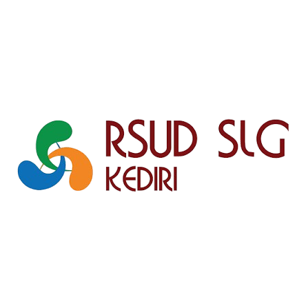

✨ Evaluasi Kualitas Pelayanan
Kuesioner Kepuasan Pasien
Ruang Anak Rawat Inap Parkit — RSUD SLG Kediri

Selamat datang! Kuesioner ini dirancang untuk mengetahui pengalaman dan tingkat kepuasan Anda/keluarga selama mendapatkan pelayanan di Ruang Anak Rawat Inap Parkit. Setiap saran dan penilaian Anda sangat berharga untuk perbaikan layanan kami yang ramah anak dan berkualitas.
Singkat & Mudah (~3-5 menit)
Data Rahasia & Aman